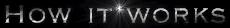
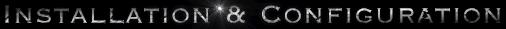
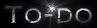

Spamcan is a simple yet extremely effective and powerful junkmail
capturing/nuking sofware patch to Sendmail v8. It is designed to
capture site-wide junkmail to a global capture file, a user owned spam
mailbox if it exists, or to /dev/null.
While user-level filtering programs such as procmail may be used to
filter out spam by regular expression, Spamcan is the first of it's
kind designed to capture spam site-wide by regular expression. In my
experience, bouncing spam is futile and wasts bandwidth. Most spam
has forged addresses and invalid return addresses.
Spamcan was written with the philosophy that unsolicited email is an
evil and disruptive presence. In my opinion it is unreasonable to
ask or require each and every user at a site with hundreds of users to
put up with unsolicited email or to manage their own anti-spam rules.
I beleve it is up to the system administration group to provide
excellent service to the user community and I belive Spamcan is a
powerful tool that aids in providing excellent service.
Spamcan works by attempting to match every header line of a
mail message, including subject line, with a set of regular
expressions you've prepared. By default matching is not case
sensitive. The expression list typically contains lines such as the
following:
All spamcan diagnostics are logged via syslog with the mail facility
at the debug level. Look for any problems relating to spamcan there.
Spamcan was designed to be installed on the internal mailhost
although this is not a requirement. It likes to look in
/var/spool/mail for two files named username.spam and
.nospamcan.username. Users at your site may choose not to have
Spamcan scan their mail by touching
/var/spool/mail/.nospamcan.username. Users at your site may
also choose to have spam directed a personal spam mailbox owned by
them by touching /var/spool/mail/username.spam. The directory
/var/spool/mail was chosen to be the root for these files because in
many installations it is globablly writable. Also, it's generally not
a good idea to access user home directories because large mail
distributions may cause your automounter to mount everyone's home. I
recommend you don't do this with .forward either.
Spamcan was designed stay out of the way of valid mail message
traffic. It examines all non-message-id headers. Internal mail and
outgoing mail is not examined. Incoming mail messages containing the
in-reply-to header are also passed through un-examined. If spammers
use this as a back-door this feature may have to be removed.
Read INSTALL.SPAMCAN for detailed installation notes.
Impliment a scoring system. Assign points to regular expressions in
the configuration file. Add up the points for a mail message; if this
number reaches some threashold, identify the message as spam.
Otherwise deliver mail with an X-Spamlevel header with the number of
points as the header value. This way the user community can filter out
possible spam without having to know about formulating anti-spam rules.
For example, a user's ~/.procmailrc could look something like the following.
Do some limited sanity checking on header files. Look for missing To:
or From: headers. Check if local domain appears on To: or
Cc:. Check if Reply-to: or From: is the same as
To:. Add points for each of these to X-Spamlevel.
Spamcan is known to work on Linux, Solaris, SunOS, Irix and NextStep,
but I'm sure it would not take much to make it work on other platforms.
Please let me know if you find Spamcan useful. Send bug reports,
enhancements, or comments to
timb@transmeta.com
I'm always interested in hearing from sites that have feedback,
good or bad.
Tim Berger

x-advertisement
sexyhot
(^Subject: (.*(free|mak(e|ing)).*money))
fresh.*addresses
mega-mailer
ExtractorPro
((stealth|mass).*mailer)
make.*money.*fast
(^(From|To): (.*[0-9]{8,}@.*\.[a-z]{3}))
(cyber(market|shop|promo|gold))
((sales|srhot|foryou|allvip|mailman|succeed|success|everyon|megaweb|emailer|allinternetusers|market|4u|Friend)@.*\.[a-z]{3})
((sallynet|scholarship|shoppingplanet|answerme|onlineprofit|yourdomain|ispam|devotion|quantcom|savetrees|nowhere)\.[a-z]{3})
--- CLOAKED! ---
The envelope "from" is also examined. Using regular expressions
is a very powerful and dangerous capability. Extreme caution must be
taken in formulating your expressions. Fortunately, Spamcan does not
discard or bounce email. Rather, Spamcan cans it to a
spamcan. In the unfortunate event that you've managed to
capture non-spam, it may be forwarded to the appropriate user.
Spamcan adds the header X-Spamcan-Reason to every message it
identifies as spam before sending it to the spamcan. It contains the
reason for identifying the mail as spam and the intended recipient.


# Recommend users add something like this to the end of their ~/.procmailrc
:0 h
SPAMLEVEL=|formail -xX-Spamlevel:
:0
* ? test $SPAMLEVEL -gt 60
Mail/spamorama
:0
* ? test $SPAMLEVEL -gt 40
Mail/spam
:0
* ? test $SPAMLEVEL -gt 30
Mail/junk
:0
* ? test $SPAMLEVLE -gt 20
Mail/junk_lists
:0
* ? test $SPAMLEVEL -gt 10
Mail/lists
Systems Administrator
Transmeta Corporation
Santa Clara, CA
timb@transmeta.com